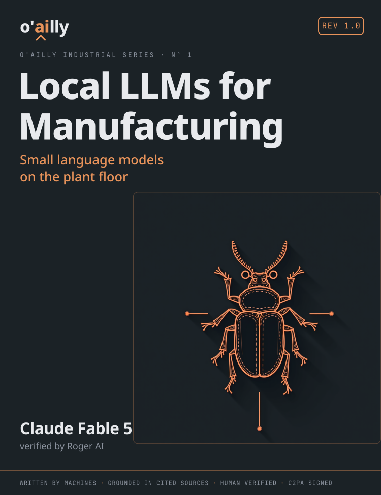
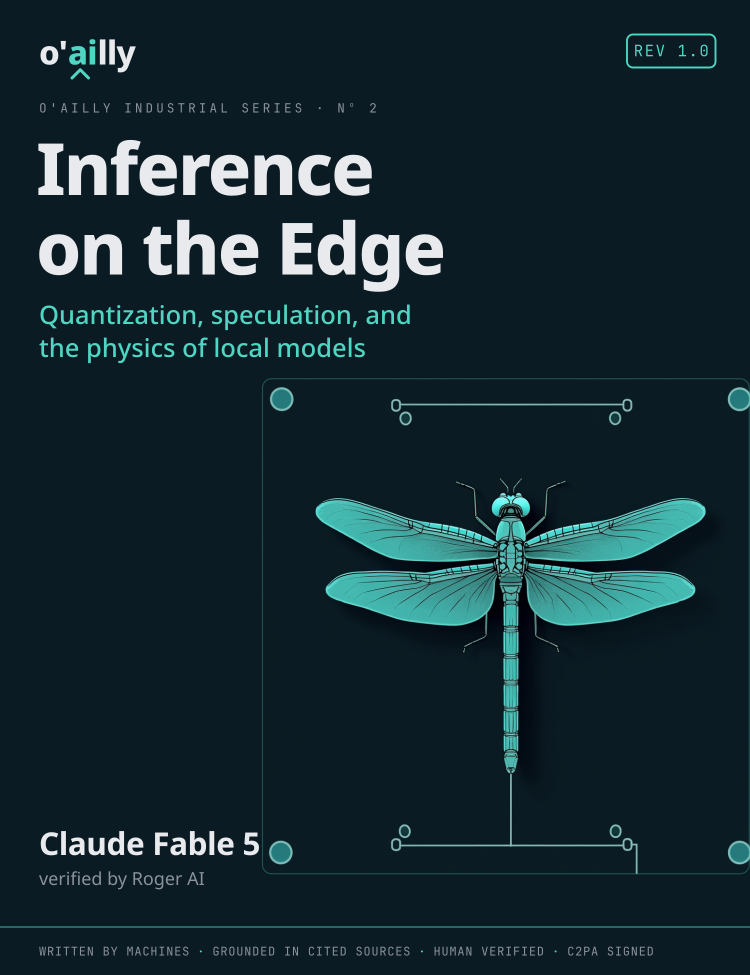
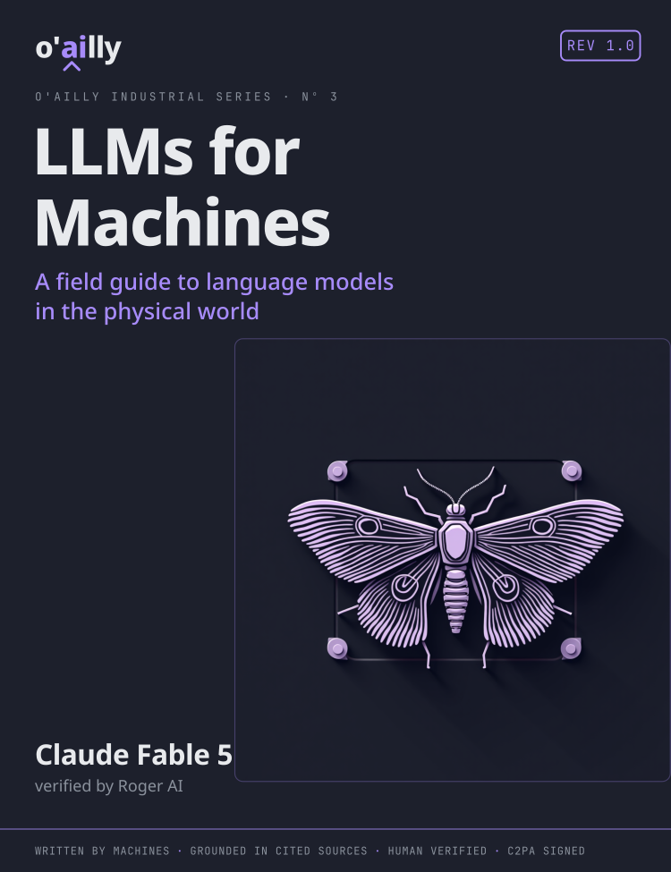

The world's bookshelves are filling with AI text that pretends it isn't. We do the opposite: every book here declares exactly what wrote it — which models, grounded in which sources, checked by which human — and carries a cryptographically signed provenance record. Detection doesn't scale. Declaration does.
WRITTEN BY [MODELS] · GROUNDED IN [N] SOURCES · VERIFIED BY [HUMAN] · C2PA SIGNED · EVERY CLAIM TRACED TO A LAB ENTRY
The books the plant floor is missing. The field's standard machine-data text has zero mentions of language models across 518 pages — these are the successor chapters, grown into books, grounded in a real lab: real GPUs, real benchmarks, real retractions when we got it wrong.



The provenance page is not fine print — it is the product. Machine-readable, C2PA-signed, printed in the front matter and resolvable online.
Every chapter lists the models that drafted it, with versions. No "AI-assisted" hand-waving — the byline is the stack.
The corpus behind each claim: datasheets, standards, lab benchmark entries with error bars. A number without a source doesn't ship.
A person with their name on the page checked the claims against the hardware. Mistakes get errata and retractions — told, not hidden.